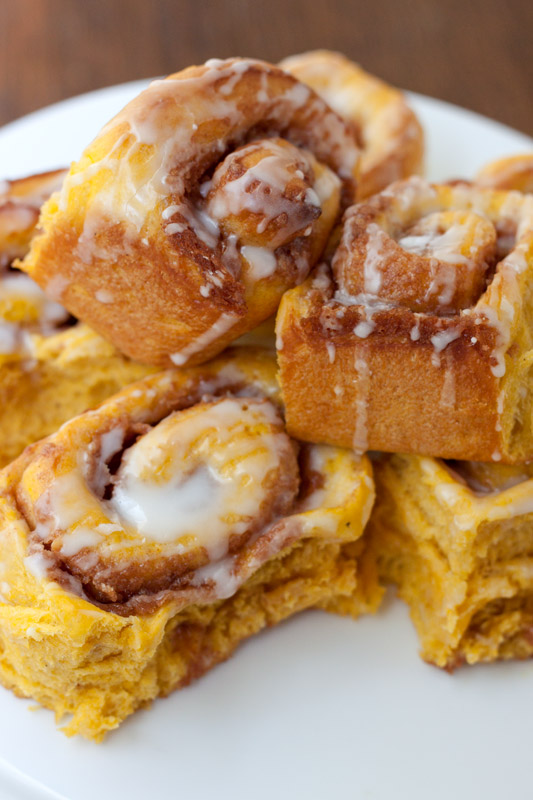

Pumpkin Cinnamon Rolls
Home

Description
Fast and easy to make, these fluffy sweet pleasures will bring happiness to every gourmand.
Ingredients
- 1 (17.5 ounce) can refrigerated cinnamon rolls with icing, such as Pillsbury® Grands.
- 5 tablespoons canned pumpkin, such as Libby's®
- 1/2 teaspoon whole milk, or as needed
- 5 small (about 2 inch) cinnamon sticks
Steps
- Preheat the oven to 350 degrees F (180 degrees C). Line a baking sheet with parchment paper. Separate cinnamon rolls and reserve icing. Carefully unroll each cinnamon roll into a long strip with cinnamon filling facing up. Spread 1 tablespoon pumpkin evenly over cinnamon filling on each strip; carefully re-roll into spirals.
- Cut 5 long pieces (about 2 feet each) of kitchen twine. Place 1 cinnamon roll in center of each piece of twine. Wrap twine around cinnamon rolls several times, crossing underneath and over the top, and spacing twine evenly to create pumpkin=shaped sections. Tie twine securely, taking care not to pull tightly enough to cut into dough. Arrange cinnamon roll pumpkins on prepared baking sheet.
- Bake in the preheated oven until puffed and golden brown, about 18 minutes. Let cool on baking sheet about 5 minutes. Carefully cut and remove twine.
- Stir together icing from cinnamon roll can and 1/2 teaspoon milk in a small bowl until smooth and pourable, adding up to 1/2 teaspoon more milk if needed to reach desired consistency. Insert 1 cinnamon stick into center of each pumpkin. Drizzle icing evenly over warm cinnamon roll pumpkins. Serve warm.